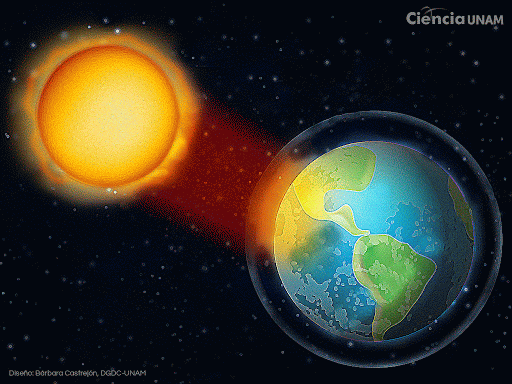

Una hipótesis firmemente asentada sostiene que el hombre podría haberse convertido en un agente climático determinante, desde hace relativamente poco tiempo. Su influencia sería mucho mayor
al producir con su actividad, sobre todo en los países desarrollados, una gran emisión de gases que producen un intenso efecto invernadero. El consenso científico ha identificado al dióxido
de carbono CO2 como el forzante dominante, presente en las emisiones de las instalaciones industriales y los medios de transporte. (El gas dominante, realmente es el vapor de agua pero tiene
una vida atmosférica muy corta -cerca de 10 días- y está casi en un equilibrio dinámico en la atmósfera).

ACTIVIDAD SOLAR
El metano y el óxido nitroso son también grandes contribuyentes forzantes del efecto invernadero. El protocolo de Kioto los incluye junto con hidrofluorocarbonos (HFCs), perfluorocarbonos (PFCs),
y hexafluoruro de azufre (SF6). Sin embargo, estos últimos son totalmente artificiales (es decir, antropogénicos).
No son únicamente las actividades industriales las más contaminantes. De acuerdo con un estudio de FAO[1] la ganadería es responsable del 18% de las emisiones de gases de efecto invernadero.
Más que las emisiones conjuntas de todo el transporte mundial.
Actualmente las emisiones se han incrementado hasta tal nivel que parece difícil que se reduzcan a corto y medio plazo, por las implicaciones técnicas y económicas de las actividades involucradas.
Desde 1978, las radiaciones del Sol se han medido con precisión mediante satélites. Estas mediciones indican que las emisiones del Sol no han aumentado desde 1978, por lo que el calentamiento durante los
últimos 30 años no puede ser atribuido a un aumento de la energía solar que llegase a la Tierra.
Se han utilizado modelos climáticos para examinar el papel del Sol en el cambio climático reciente.66 Los modelos son incapaces de reproducir el rápido calentamiento observado en las décadas recientes
cuando solo se tienen en cuenta las variaciones en la radiación solar y la actividad volcánica. Los modelos son, no obstante, capaces de simular los cambios observados en la temperatura del siglo XX cuando
incluyen todos los forzamientos externos más importantes, incluidos la influencia humana y los forzamientos naturales.
Otra línea de prueba en contra de que el Sol sea el causante del cambio climático reciente proviene de observar como han cambiado las temperaturas a diferentes niveles en la atmósfera de la Tierra.
Los modelos y las observaciones muestran que el calentamiento de efecto invernadero resulta en el calentamiento de la atmósfera inferior (troposfera), pero el enfriamiento de la atmósfera superior
(estratosfera). El agotamiento de la capa de ozono por refrigerantes químicos también ha dado lugar a un fuerte efecto de enfriamiento en la estratosfera. Si el Sol fuera responsable del calentamiento
observado, se esperaría el calentamiento tanto de la troposfera como de la estratosfera.
VARIACIONES ORBITALES
La inclinación del eje de la Tierra y la forma de su órbita alrededor del Sol varían lentamente durante decenas de miles de años y son una fuente natural de cambio climático al modificar la distribución
estacional y latitudinal de la insolación.
Durante los últimos miles de años, este fenómeno contribuyó a una lenta tendencia hacia el enfriamiento en las latitudes altas del hemisferio norte durante el verano, la que se invirtió debido al calentamiento
inducido por los GEI durante el siglo XX.
Variaciones en los ciclos orbitales pueden iniciar un nuevo periodo glaciar en el futuro, aunque la fecha de esto depende de las concentraciones de GEI además del forzamiento orbital. No se prevé un nuevo
periodo glaciar dentro de los próximos 50 000 años si las concentraciones de CO2 atmosférico continúan sobre las 300 ppm.